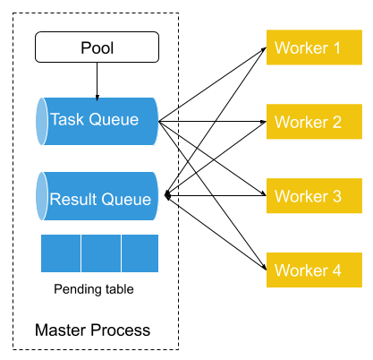

More about Fiber
Using Fiber with GPUs¶
Fiber supports running workload with GPUs on Kubernetes. First, you need to configure your Kubernetes cluster for GPU support. Check out this guide for details. Currently, we support Nvidia GPU with NVIDIA GPU device plugin used by GCE. Other types of device and device plugin will be supported in the future.
Once GPU is set up on your cluster. We can run some tests to see if GPU is ready for use. Let's create a new docker file called fiber-gpu.docker with the following content:
FROM nvidia/cuda:10.0-runtime-ubuntu18.04 RUN apt-get update && apt-get install -y python3-pip RUN pip3 install fiber
This time, we use nvidia/cuda:10.0-runtime-ubuntu18.04 as our base image. This is because it already have CUDA libraries properly configured. You can also use other base images, but you may need to configure CUDA path by yourself. Check out this guide for details.
Using GPU with Fiber master process¶
If the master process needs GPU, then it can be done by providing --gpu argument to fiber command when running your program. Alternatively, you can also specify nvidia.com/gpu limits when you launch fiber master process with kubectl. Checkout here for details. Here, we show how this can be done with fiber command.
Let's test if GPU is available by running this test command and it should print out the pod name created:
$ fiber run --gpu 1 nvidia-smi
...
Created pod: fiber-e3ae700b
If everything is configured properly, you should see something similar to this when you get logs for that pod:
$ kubectl logs fiber-e3ae700b Wed Feb 5 20:33:04 2020 +-----------------------------------------------------------------------------+ | NVIDIA-SMI 418.67 Driver Version: 418.67 CUDA Version: 10.1 | |-------------------------------+----------------------+----------------------+ | GPU Name Persistence-M| Bus-Id Disp.A | Volatile Uncorr. ECC | | Fan Temp Perf Pwr:Usage/Cap| Memory-Usage | GPU-Util Compute M. | |===============================+======================+======================| | 0 Tesla T4 Off | 00000000:00:05.0 Off | 0 | | N/A 35C P8 9W / 70W | 0MiB / 15079MiB | 0% Default | +-------------------------------+----------------------+----------------------+ +-----------------------------------------------------------------------------+ | Processes: GPU Memory | | GPU PID Type Process name Usage | |=============================================================================| | No running processes found | +-----------------------------------------------------------------------------+
When we pass --gpu 1 to fiber command, it created a new pod with 1 GPU allocated to that pod. And we can see in our example, one Nvidia Tesla T4 GPU has been allocated to our pod.
Using GPU with Fiber child process¶
If the child process needs GPU, it can be done with Fiber's resource limits. Simply add @fiber.meta(gpu=x) to your child process function that needs GPU, and Fiber will allocate GPU for your function when it runs.
Let's create an simple program with runs a child process with PyTorch and GPU. Create a file called fiber_process_gpu.py.
import fiber from fiber import SimpleQueue, Process import torch import numpy as np @fiber.meta(gpu=1) def process_using_gpu(q): input_a, input_b = q.get() a = torch.tensor(input_a).cuda() b = torch.tensor(input_b).cuda() c = torch.matmul(a, b).cpu().numpy() q.put(c) def main(): q = SimpleQueue() p = Process(target=process_using_gpu, args=(q,)) p.start() a = np.random.rand(3, 4) b = np.random.rand(4, 2) q.put((a, b)) res = q.get() print("Result is", res) p.terminate() p.join() if __name__ == '__main__': main()
In this example, we have a child process which accepts 2 tensors from the master process, calculate their product with GPU and then return the result to the master process. Because this example needs PyTorch and NumPy, we added a few lines to fiber-gpu.docker. The new docker file looks like this:
FROM nvidia/cuda:10.0-runtime-ubuntu18.04 RUN apt-get update && apt-get install -y python3-pip RUN pip3 install --no-cache-dir torch==1.2.0 torchvision==0.4.0 pillow==6.1 RUN pip3 install fiber ADD fiber_process_gpu.py /root/fiber_process_gpu.py
Run this program with the following command:
$ fiber run python3 /root/fiber_process_gpu.py ... Created pod: fiber-384369de
Get logs of pod fiber-384369de.
$ kubectl logs fiber-384369de Result is (array([[0.10797104, 0.65835916, 0.95002519, 0.83939533], [0.06103808, 0.39594844, 0.56635164, 0.61488279], [0.26484163, 0.75913394, 0.45325563, 0.62634138]]), array([[0.52567844, 0.47349188], [0.58966787, 0.05199646], [0.10254589, 0.37998549], [0.5943244 , 0.02409804]]))
We see that the master process has successfully printed out the product of 2 tensors calculated on GPU from its child process.
Working with persistent storage¶
It is also very important to get your training logs after your training jobs is done. Because the disk space inside running container is not persistent, we need to store logs and outputs of our program on persistent storage.
fiber command line tool provided a way to use Kubernetes' PersistentVolumeClaim to storage program output data. Here, we create an NFS Persistent Volume claim following instructions here.
# create persistent volume claim on GCP $ kubectl apply -f https://raw.githubusercontent.com/kubernetes/examples/master/staging/volumes/nfs/provisioner/nfs-server-gce-pv.yaml # create nfs server $ kubectl apply -f https://raw.githubusercontent.com/kubernetes/examples/master/staging/volumes/nfs/nfs-server-rc.yaml # create nfs server service $ kubectl apply -f https://raw.githubusercontent.com/kubernetes/examples/master/staging/volumes/nfs/nfs-server-service.yaml # create persistent volume $ kubectl apply -f https://raw.githubusercontent.com/kubernetes/examples/master/staging/volumes/nfs/nfs-pv.yaml # create nfs persistent volume claim $ kubectl apply -f https://raw.githubusercontent.com/kubernetes/examples/master/staging/volumes/nfs/nfs-pvc.yaml
This will create an NFS persistent volume claim called "nfs" with size 1M. Once we have it done, we can try out this feature by:
fiber run -v nfs bash -c 'echo "This file is persisted across runs" > /persistent/foo.txt'
What this command does is in addition to create a new job, it mounted the persistent volume claim nfs to path /persistent inside the container. Then we create a file called /persistent/foo.txt with some content.
Then we can retrieve the content of this file from a different job:
$ fiber run -v nfs cat /persistent/foo.txt ... Created pod: fiber-88e2197a $ kubectl logs fiber-88e2197a This file is persisted across runs
Error handling¶
Fiber's Pool supports error handling by default. This means when a Pool is created and all the Pool workers are up, if one of the worker crashes in the middle of the computation, then the tasks that was working on by that worker will be retried. Those tasks will be sent to other healthy workers and the master process will not be interrupted by this crash. At the same time, the crashed worker will be cleaned up and a new worker will be started to replace that crashed Pool worker.
A Pool with a list of tasks can be viewed as a contract between the process that created the Pool and all worker processes. We define some concepts as below:
Task function is a function that is passed to Pool.apply() or other similar functions like Pool.map() as func argument. Task arguments are Python objects that are passed to task functions when they run. Task is a task function combined with task arguments. Task result is the result returned by a task function. Task queue is a queue used internally by a Process Pool to store all tasks.
All tasks are distributed to worker processes through task queue. When a user creates a new Pool, a Pool and associated task queue, result queue and pending table are created. All worker processes are also created.

First, the Pool will put all tasks into the task queue, which is shared between the master process and worker processes. Each of the workers will fetch a single task (or a batch of tasks) from the task queue as task arguments, then run task function with task arguments. Each time a task is removed from the task queue, an entry in the pending table is added. The entry will have the worker process’ id as its key and the task as its value. Once the worker finished that task, it will put the result in the result queue. And Pool will remove the entry associated with that task from the pending table.

If a worker process fails in the middle of processing (Worker 3 in the above diagram). Then its failure will be detected by the Pool which serves as a process manager of all worker processes and constantly checks with Peloton to get all its workers’ states. Then the Pool will put the pending task from the pending table back to the task queue if the previously failed process has a pending task. Then it will start a new worker process (Worker 5) to replace the previously failed process and connect the newly created worker process to a task queue and result queue.
In this way, we can make sure that all the tasks that are put into the task queue get process by one of the worker processes.
Note that the automatic retry should be only turned on if the task function is idempotent.
Extensions to standard multiprocessing API¶
Ring¶
A Ring in fiber stands for a list of processes who work collectively together. Unlike Pool, Ring doesn't have the concept of master process and worker process. All the members inside the Ring shared basically the same responsibility. Each node in the ring usually only talk to it's left and right neighbors. Each member in the Ring has a rank which range from 0 to the number of nodes - 1. Usually ring node 0 has some specially responsibility to gather additional information and usually also serves as a control node.
The ring topology is very common in machine learning when doing distributed SGD. Examples include torch.distributed, Horovod, etc. But generally it's really hard to start this kind of workload on a computer cluster, especially when setting up the communication between different nodes are needed.
Fiber provides the Ring class to simplify this process. Fiber handles the starting of all the processes and provides network information to the ring-forming framework. The end user only needs to provide an initialization function and the target function that each node runs, and Fiber will handle the rest for the user.
An example of using Ring with torch.distributed can be found in examples/ring.py in Fiber's source code repo.
As mentioned above, Ring needs a initialization function and a target function. In this example, pytorch_ring_init is the initialization function. In it, we initialize PyTorch and set environment variables to tell PyTorch where is the master node so that all the nodes can be discovered by PyTorch. And pytorch_run_sgd is the target function that does distributed SGD on each of the Ring node. Fiber will first call pytorch_ring_init on each of the node to set up the ring and then call pytorch_run_sgd to do the actual distributed SGD.

Fiber Ring. A Fiber Ring with 4 nodes is depicted. Ring node 0 and ring node 3 run on the same machine but in two different containers. Ring nodes 1 and 2 both run on a separate machine. All these processes collectively run a copy of the same function and communicate with each other during the run.
Ring demo¶
To run everything, we can re-use the docker file from the previous section and download examples/ring.py and put it into the same directory as your docker file. This demo shows how to run a Ring on Kubernetes with GPU.
Add a new line to the docker file ADD ring.py /root/ring.py and the new docker file looks like this:
FROM nvidia/cuda:10.0-runtime-ubuntu18.04 RUN apt-get update && apt-get install -y python3-pip RUN pip3 install --no-cache-dir torch==1.2.0 torchvision==0.4.0 pillow==6.1 RUN pip3 install fiber ADD fiber_process_gpu.py /root/fiber_process_gpu.py ADD ring.py /root/ring.py
Now we run everything with this command:
$ fiber run --gpu 1 python3 /root/ring.py
...
Created pod: fiber-dbb2d4d9
Check the logs our the job:
$ kubectl logs fiber-dbb2d4d9 pytorch ring init, rank 0 2 0 eth0 10.12.0.116 48707 Downloading http://yann.lecun.com/exdb/mnist/train-images-idx3-ubyte.gz to ./data/MNIST/raw/train-images-idx3-ubyte.gz 100.1%Extracting ./data/MNIST/raw/train-images-idx3-ubyte.gz to ./data/MNIST/raw Downloading http://yann.lecun.com/exdb/mnist/train-labels-idx1-ubyte.gz to ./data/MNIST/raw/train-labels-idx1-ubyte.gz 113.5%Extracting ./data/MNIST/raw/train-labels-idx1-ubyte.gz to ./data/MNIST/raw Downloading http://yann.lecun.com/exdb/mnist/t10k-images-idx3-ubyte.gz to ./data/MNIST/raw/t10k-images-idx3-ubyte.gz 100.4%Extracting ./data/MNIST/raw/t10k-images-idx3-ubyte.gz to ./data/MNIST/raw Downloading http://yann.lecun.com/exdb/mnist/t10k-labels-idx1-ubyte.gz to ./data/MNIST/raw/t10k-labels-idx1-ubyte.gz 180.4%Extracting ./data/MNIST/raw/t10k-labels-idx1-ubyte.gz to ./data/MNIST/raw Processing... Done! Rank 0 , epoch 0 : 0.5177083023861527 Rank 0 , epoch 1 : 0.12978197557569693 ...
This means ring node 0 has been started and running!
What about the other nodes in the ring? We can first get the pods that other process are running by:
$ kubectl get po|grep process process-3-03e3a1b6 1/1 Running 0 3m12s
In this example, we only have one addition node in the ring and the pod name is process-3-03e3a1b6. Then we can get it's logs by:
$ kubectl logs process-3-03e3a1b6 pytorch ring init, rank 1 2 1 eth0 10.12.0.116 48707 Downloading http://yann.lecun.com/exdb/mnist/train-images-idx3-ubyte.gz to ./data/MNIST/raw/train-images-idx3-ubyte.gz 100.1%Extracting ./data/MNIST/raw/train-images-idx3-ubyte.gz to ./data/MNIST/raw Downloading http://yann.lecun.com/exdb/mnist/train-labels-idx1-ubyte.gz to ./data/MNIST/raw/train-labels-idx1-ubyte.gz 113.5%Extracting ./data/MNIST/raw/train-labels-idx1-ubyte.gz to ./data/MNIST/raw Downloading http://yann.lecun.com/exdb/mnist/t10k-images-idx3-ubyte.gz to ./data/MNIST/raw/t10k-images-idx3-ubyte.gz 100.4%Extracting ./data/MNIST/raw/t10k-images-idx3-ubyte.gz to ./data/MNIST/raw Downloading http://yann.lecun.com/exdb/mnist/t10k-labels-idx1-ubyte.gz to ./data/MNIST/raw/t10k-labels-idx1-ubyte.gz 180.4%Extracting ./data/MNIST/raw/t10k-labels-idx1-ubyte.gz to ./data/MNIST/raw Processing... Done! Rank 1 , epoch 0 : 0.5106956963933734 Rank 1 , epoch 1 : 0.12546868318084206 ...
It showed we have successfully set up our distributed SGD application with Fiber and PyTorch and GPU!
AsyncManager¶
Python's multiprocessing provides a Manager type to share data between different processes. A manager manages a Python object and it accepts method calls from remote so that the state of the managed object can be changed.
The stateful storage nature of Manager make it suitable to be use in reinforcement learning to hold simulator states. But multiprocessing only provided an implementation of manager called SyncManager who can only do synchronized method calls. This make it not easy to create many managers and make them work in parallel.
Fiber implemented an asynchronous version of manager called AsyncManager which allows asynchronous method calls. Users can create many AsyncManager and they can work in parallel.
AsyncManager demo¶
We use the example from examples/async_manager.py. In this example, we compare the performance of synchronous and asynchronous managers. We create 4 asynchronous managers and each one of them manages a CartPole-v1 environment. The 4 managers runs in parallel. Each of method call to env is an asynchronous method call. For example, env.step(action) returns a handle object immediately. When you call handle.get(), you will get the actual result from that method call.
Download async_manager.py file. This example needs gym and you may install it with:
pip install gym
Run async manager example with Python:
$ python async_manager.py Sync manager took 3.7199201583862305s Async manager took 1.6843571662902832s
We should see that asynchronous manager runs much faster than synchronous managers.